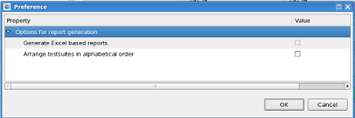

Preference page of Smart Correlation - Release Data Collector
Enables you to customize the process of the Release Data Collector.
Procedure
-
Open the Preference page by clicking the
 icon from the Collect Release Data page or the
Compare Release Reports page.
icon from the Collect Release Data page or the
Compare Release Reports page.

Functional changes
- Introduced in SmarTest 7.3.2